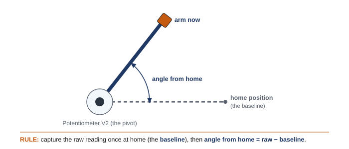

What makes a robot automatic
Back in Chapter 8 you met two kinds of system. An open-loop machine runs blind — it does its fixed routine and never checks the result, like a microwave that keeps heating whether the food is hot or not. Your Chapter 10 programs were open-loop: a list of commands, run once, top to bottom. A closed-loop machine senses what's happening and adjusts — like a thermostat that reads the temperature and switches the heat on or off. That difference is the whole idea of automation: a machine that responds to the world on its own.
To make your robot closed-loop, you need three things working in a cycle: a way to sense, a way to decide, and a way to act. You already have "act" — those are the motor commands from Chapter 10. This chapter adds the other two.
Reading a sensor
A sensor is the robot's way of taking in information — its input. In Chapter 8 you watched a sensor's reading change on the Brain's Devices screen; now you'll read that same value in your code and act on it. You name a sensor in your device list, just like a motor, then ask it for its reading. Two you'll use most:
● Naming two sensors in your device list
motor driveMotor = motor(PORT1); distance frontEye = distance(PORT2); // a Distance Sensor on Smart Port 2 bumper startButton = bumper(Brain.ThreeWirePort.A); // a Bumper Switch on 3-Wire port A
- The Distance Sensor reports how far away the nearest object is, in millimeters: frontEye.objectDistance(mm) gives a number like 340. (Smart sensors plug into a numbered Smart Port.)
- The Bumper Switch is a simple button: startButton.pressing() is true when it's pushed in and false when it isn't. (Switches plug into a lettered 3-Wire port.)
A sensor reading is just a value your program can check — a distance number, or a yes/no. The next step is deciding what to do with it.
Making a decision: if / else
An if statement asks a true-or-false question — a condition — and runs one block of code if the answer is true, and (optionally) a different block with else if it's false:
● One decision
if (frontEye.objectDistance(mm) < 150) { // is something closer than 150 mm? driveMotor.stop(); // yes -> stop } else { driveMotor.spin(forward); // no -> keep driving }
The condition is the part in parentheses. It uses a comparison — < (less than), > (greater than), or == (equal to) — or a yes/no reading like startButton.pressing(). If you have more than two cases, chain them with else if: check the first condition, then the next, then the next, and finally a catch-all else. The curly braces { } mark each block — exactly like the blocks you marked in your Chapter 9 pseudocode.
Doing it forever: the while loop
Here's the catch: an if checks its condition once. A real automatic device has to check continuously — a gate must watch for cars all day, not glance once and quit. The while loop does that. while (true) means "keep repeating the block inside, forever," so the robot senses, decides, and acts again and again:
● A complete automatic behavior — stop before you hit something
int main() { vexcodeInit(); driveMotor.setVelocity(50, percent); while (true) { // keep checking, forever if (frontEye.objectDistance(mm) < 150) { // something is close driveMotor.stop(); // -> stop } else { // path is clear driveMotor.spin(forward); // -> keep driving } wait(20, msec); // small pause, then check again } }
Read it as the loop in the diagram: sense (read frontEye), decide (the if), act (stop or spin), then loop back and do it again. The little wait(20, msec) at the end gives the Brain a moment between checks — always include it in a while (true) loop. Swap in a different sensor and you get a different machine: use if (startButton.pressing()) and you've built a sign that spins only while a button is held.
🎯 "true" forever, on purpose
while (true) looks strange the first time — a loop that never ends. But that's exactly what an automatic machine needs: it should keep sensing and responding the entire time it's powered on. The loop is the heart of automation. Just remember the wait(20, msec) at the bottom so the Brain isn't checking a million times a second, and make sure something inside the loop can change — otherwise the robot will do the same thing forever.
Going further: a sensor that reports an angle
The bumper gives a yes/no, and the Distance Sensor gives millimeters to an object. But what if you need to know how far a shaft has turned — the angle of a robot arm, a dial, or a steering column? That takes a different sensor and one new programming tool: a place to store a value.
Storing a value: variables
A variable is a named box that holds a value you can read, use in math, and change later. You make one by giving its type and a name:
● Three variables
int count = 0; // a whole number double home = 0; // a number with decimals bool running = false; // true or false
Once a variable exists you can update it — count = count + 1; adds one — or read it inside an if. Variables let you save a sensor reading and reuse it, keep a running total, or remember something from one loop pass to the next. (You've already met the idea: the bool running latch in Pattern D below is a variable.)
A sensor that measures rotation: the Potentiometer
The Potentiometer V2 measures the angle of the shaft it's mounted on — anywhere from 0 to about 330°. It plugs into a lettered 3-Wire port like the bumper, and you read it as a decimal angle:
● Name it in the device list, then read it
// in the device list, above main: potV2 armPot = potV2(Brain.ThreeWirePort.A); // later, read the angle into a double: double raw = armPot.angle(degrees); // 0 to ~330
Unlike the bumper (pressed or not) or the Distance Sensor (millimeters to an object), the potentiometer reports a rotation — exactly what you want for an arm or a dial. It even keeps its reading after the Brain restarts, because the value follows the shaft's physical position.
Where's zero? Calibration
Here's the catch: the potentiometer's zero is wherever it happened to be mounted — the sensor even has slots that let you nudge it up to 90° by hand. So a raw reading of 145° doesn't mean "the arm is 145° above level"; it means "the shaft is 145° from the sensor's own internal zero," which is arbitrary.
To make the number mean something, you calibrate: at startup, hold the arm at a known home position, read the potentiometer, and store that reading in a variable — the baseline. From then on, raw − baseline is the arm's angle measured from home. It's the same idea as the inertial sensor's calibrate step in Chapter 13 — find your zero at startup — but here you do it yourself, with a variable. (And like the inertial, VEXcode's Device menu adds the sensor for you; in VS Code you write the constructor line yourself.)

Repeat a set number of times: the for loop
One analog reading can jitter by a degree or two, so for a steady baseline you take several readings and average them. That needs a loop that runs a fixed number of times — a for loop. It starts a counter, keeps going while the counter is below a limit, and steps the counter each pass:
● Calibrate: average 20 readings at home
double sum = 0; for (int i = 0; i < 20; i = i + 1) { sum = sum + armPot.angle(degrees); wait(5, msec); } double home = sum / 20; // the baseline
(i = i + 1 just adds one to the counter each pass; you'll also see it written i++.) Now you know two kinds of loop: while (true) repeats forever — keep sensing and reacting — while a for loop repeats a set number of times, then moves on.
Putting it together
Calibrate once at the top of main(), then read the calibrated angle in your while (true) loop and act on it — for example, raise an arm until it passes 90° from home, then hold:
● Raise the arm to 90° from home, then hold
int main() { vexcodeInit(); // calibrate: average 20 readings at home double sum = 0; for (int i = 0; i < 20; i = i + 1) { sum = sum + armPot.angle(degrees); wait(5, msec); } double home = sum / 20; armMotor.setStopping(hold); while (true) { double angle = armPot.angle(degrees) - home; if (angle < 90) { // not high enough yet armMotor.spin(forward); } else { armMotor.stop(); } wait(20, msec); } }
That's a real control system: it senses an angle, compares it to a calibrated target, and acts — the Chapter 8 loop again, now with a sensor that reports how much, not just whether. A classic challenge: make the arm stop and hold at three different heights, one per controller button.
🎯 Raw vs. calibrated
Always subtract your baseline before you trust a potentiometer number. The raw angle answers "where is the shaft in the sensor's own terms"; raw − home answers "where is the arm, measured from where I started" — and that's the value your if conditions should use. Re-calibrate whenever you remount the sensor.
📐 Build constraints (still in force)
- Build your device from the classroom PLTW Gateway kit only. The kit's bundled motor and sensors are fair game; the separate competition team's V5 parts are off-limits.
- The whole device must still fit one IKEA Kallax cubby — a 33 × 33 cm (13 × 13 in) opening, about 38 cm (15 in) deep. The 33 × 33 face is the limit, so plan your gate, sign, or elevator to pack into that square.
🏆 Also on the V5 competition team?
The full command-by-command map is in Appendix B: EXP → V5 Team Bridge.
This is competition programming. A V5 autonomous routine — the part of a match where the robot runs with no driver — is exactly this loop: read sensors, decide with if/while, drive motors. Same C++, same structure. A V5 robot just has more sensors to read (and a 21-port Brain to plug them into). Everything you build here is the same skill the autonomous coder uses; browse the sensors in the V5 C++ API.
📚 Learn more — VEX Library & C++ API
- Using the Distance Sensor with VEX EXP — the proximity reading (objectDistance) at the center of most automatic behaviors.
- Using the Bumper Switch with VEX EXP — the simple pressed/not-pressed switch, wired to a 3-Wire port.
- Using the Optical Sensor with VEX EXP — detect a color or a nearby object, another input option for your device.
- Using the Potentiometer V2 with VEX EXP — the angle reading (angle(degrees)) for arms and dials, wired to a 3-Wire port.
- Motor and Motor Group — VEX EXP C++ API — the motor commands your if blocks will call.
⚠️ Safety
- An automatic robot moves on its own, sometimes when you don't expect it. Keep hands clear of gates, arms, and gears, and be ready to power down.
- Secure the device so a moving part can't pinch fingers or knock things off the bench.
- Run a program that drives only after you've unplugged the USB-C cable.
- Power the Brain down with the X button when you're done, and store the device safely in its cubby.
The project: build something automatic
Now you put it all together. Your team will design, build, and program a working automatic device — something that senses its world and responds, with no one controlling it. Pick a challenge (or propose your own):
- Toll-booth or parking gate — the gate raises when a car pulls up (Distance Sensor) and lowers when it leaves.
- Automatic door — opens when someone approaches, closes when the way is clear.
- "Stay on course" vehicle — drives forward but stops itself before bumping a wall or obstacle.
- Spinning sign with a stop switch — spins while a button is held, stops when released (Bumper Switch).
- Freight elevator — rises to a floor and stops when it reaches a switch.
- No-touch switch — turns a mechanism on when you wave a hand in front of the sensor.
Work as a small team with shared jobs — someone leading the build, someone the wiring, someone the code — and trade roles so everyone does each. And use the design process you've practiced all year: understand the problem and its constraints, sketch a couple of ideas, pick the best, build it, then test and improve.
Find your project's pattern
The "stop before you hit something" program above is one pattern — but the six projects need a few different ones. Here's the toolkit: find your project in the table at the end and start from its pattern. Two of them use commands you haven't met yet, both about making a motor hold a position instead of spinning freely like a wheel:
- gateMotor.setStopping(hold); — when this motor stops, hold its position instead of coasting. Set it once before the loop; a gate or elevator needs it so it stays put.
- gateMotor.spinToPosition(90, degrees); — drive the motor to a specific angle and hold there. It counts from where it started, so begin with the gate closed at 0°.
● Pattern A · spin while a condition is true — "stay on course" vehicle, spinning sign
while (true) { if (startButton.pressing()) { // held -> run signMotor.spin(forward); } else { // released -> stop signMotor.stop(); } wait(20, msec); }
● Pattern B · raise & hold, then lower — toll gate, automatic door
gateMotor.setStopping(hold); // hold the gate where it stops while (true) { if (frontEye.objectDistance(mm) < 200) { // a car is here gateMotor.spinToPosition(90, degrees); // raise & hold } else { // clear gateMotor.spinToPosition(0, degrees); // lower } wait(20, msec); }
● Pattern C · do something until a switch, then stop — freight elevator
liftMotor.setStopping(hold); liftMotor.spin(forward); // start rising while (!topSwitch.pressing()) { // until the switch is pressed wait(20, msec); } liftMotor.stop(); // reached the top -> hold
● Pattern D · remember a state (a latch) — no-touch switch
bool running = false; // off to start while (true) { if (frontEye.objectDistance(mm) < 100) { // a hand waved close running = true; // remember: turn on } if (running) { mechMotor.spin(forward); } wait(20, msec); }
Want it to turn off too? Add a second if that sets running = false on a different trigger — now it's a toggle. For "runs only while your hand is there," that's just Pattern A.
| Your project | Pattern | Sensor |
|---|---|---|
| "Stay on course" vehicle | A — spin while clear, stop when close | Distance |
| Spinning sign | A — spin while the button is held | Bumper |
| Toll booth / parking gate | B — raise & hold for a car, lower when clear | Distance |
| Automatic door | B — open & hold on approach, close when clear | Distance |
| Freight elevator | C — rise until the switch, then stop & hold | Bumper |
| No-touch switch | D — wave to latch on (or A for "on while hand present") | Distance |
🎯 Pick your threshold by reading the real value
Don't guess the number in < 150. On the Brain's Devices screen, open your Distance Sensor and watch its reading as you hold an object exactly where you want the robot to react — that number is your threshold. Fine-tune it after a test or two.
What you'll need
- Your computer with VS Code + the VEX extension, and a USB-C cable
- The PLTW Gateway EXP kit: Brain, charged battery, at least one motor, and a sensor (Distance, Bumper, or Optical)
- Your engineering notebook for sketches, pseudocode, and a daily journal
- The project worksheet (design brief, decision matrix, and reflection)
Do it
- Define the problem. Read your task, then write a short design brief: what it must do, and every constraint (EXP kit only, fits the cubby, which sensor).
- Sketch and choose. Each teammate sketches a design. Compare them in a simple decision matrix against your criteria, and pick the best one to build.
- Build the mechanism. Construct your device from the kit so it fits the cubby. Mount the motor and the sensor where they need to be, and wire them to the Brain.
- Plan, then code. Write pseudocode for the sense → decide → act loop first. Then translate it into C++: name your devices, set up the while (true) loop, and fill in the if/else.
- Test and refine — a little at a time. Download, watch it run, and fix one thing at a time. Tune your distance threshold or speed until it behaves the way the task needs.
- Evaluate. In your notebook, judge how well it works — and answer: which sensors did you use, and is your device an open or a closed loop?
✅ How you'll be assessed
- It works as an automatic, closed-loop device — it senses and responds with no one driving it.
- Your code is a clear sense → decide → act loop: a sensor read, an if/else, a motor command, wrapped in while (true) with a wait.
- Your design process is documented — design brief, decision matrix, pseudocode, and a daily journal.
- You can point to the exact line that senses, the line that decides, and the line that acts in your own program.
Check your understanding
- What is the difference between an open-loop and a closed-loop system? Which one is "automatic," and why?
- What does a sensor give your program? Give the reading you'd get from a Distance Sensor and from a Bumper Switch.
- What does an if / else statement do? What is the "condition," and where does it go?
- Why does an automatic device need a while (true) loop instead of a single if?
- A Potentiometer V2 on a robot arm reads 160 when the arm is parked at its home position. Why can't you just say "the arm is at 160°," and what do you store in a variable to fix it? Once you have it, how do you get the arm's angle from home?
- You know two kinds of loop now. When would you use a for loop instead of while (true)? Give one example from this chapter.
- Write the sense–decide–act idea in pseudocode for this device: "a night-light motor turns a lamp on when the room is dark." Name the sensor reading, the decision, and the action.
- For your project: which sensor did you choose, and what condition (the question your if asks) makes it respond correctly?
Key terms
Sources (PLTW Gateway Automation & Robotics, Project 3.4 "Automation Through Programming"; VEX Library, kb.vex.com; VEXcode EXP C++ API, api.vex.com): the project (design, build, and program an automatic device — toll booth, traffic signal, elevator, spinning sign, and the like — as a team, using the engineering design process) and its conclusion questions (which sensors? open or closed loop?) are from the PLTW Gateway curriculum, modernized here from the legacy Cortex/ROBOTC tool to VEX C++ in VS Code on the EXP Brain. The control structures (if / else if / else and while (true)) are standard C++; the sensor commands are verified against the VEX Library — the Distance Sensor's objectDistance(mm) and the Bumper Switch's pressing() (a 3-Wire device named on Brain.ThreeWirePort). The open-loop / closed-loop framing and the sense → decide → act loop carry over from Chapter 8; the motor commands from Chapter 10. The Potentiometer V2 (potV2, read with angle(degrees) over a 3-Wire port, 0 to about 330°) is verified against the VEX Library and the VEXcode EXP C++ API; int / double variables and the for loop are standard C++. The calibrate-with-a-baseline pattern mirrors the inertial calibration in Chapter 13.